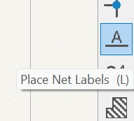

1. Diseño en KiCad
Primero debemos de descargar el software KiCad en la siguiente página.
Después de haber instalado el programa deberás de instalar todas las librerías pertinentes que se encuentran en el teams de la clase.
Para iniciar el proyecto, se utilizó el software KiCad para el diseño del esquema eléctrico y el ruteo de la placa PCB. Se definieron los componentes electrónicos, se crearon las conexiones y se generó el diseño de las pistas.
- Creación del esquema eléctrico
- Diseño del PCB (editor de placas)
- Exportación de archivos Gerber
Esto se hace en new project y de ahí seleccionas el esquemático al crear el esquemático seleccionas todos los componentes que usarás
Para las etiquetas, los símbolos y el texto se seleccionan los siguientes botones.
Es importante recalcar que no es necesario cablear todo directamente, se pueden usar etiquetas para evitar esto.
Además de esto hay que asegurarnos de agarrar el componente del tamaño correcto, porque si no la placa puede quedar mal.


Al terminar de hacer el esquemático, deberás pasar este al editor de placas y comenzar a cablear todo.
Antes de empezar a cablear es importante ir a la configuración de la placa.
Se va a abrir la siguiente pestaña y nos vamos a tamaños predefinidos y establecer el ancho de mm.
 En la misma pestaña hay que ir a reglas de diseño y establecer los siguientes datos.
En la misma pestaña hay que ir a reglas de diseño y establecer los siguientes datos.

y de ahí empiezas a enrutar todo. Habra ciertas pistas que no seran necesarias dependiendo del componente como en los botones de 4 pines.
Para enrutar deberás seleccionar el siguiente botón y verificar que el ancho sea de 0.4 mm.

Puedes visualizar las capas que estas utilizando en esta pestaña, en este caso se utliza la de cobre para la pista, la de edge cut para el contorno y la de user 1 para las perforaciones.

Después de que ya conectaste todo, el diseño se debería ver algo así, dependiendo de como lo acomodes y lo estructures.
Ya que tengas todo lo escencial cableado deberás presionar el botón para generar el análisis DCR y así comprobar que tu placa no tenga errores (Hay algunos que se pueden ignorar).
Una vez terminado deberás de exportar los archivos como gerber en donde dice salidas de fabricación y luego deberás seleccionar las capas que utilizaste y vas a cortar y en donde dice plot format deberás de ponerle SVG
Ya que le diste SVG deberás seleccionar la opción donde dice "fit page to board", guardar y trazar.